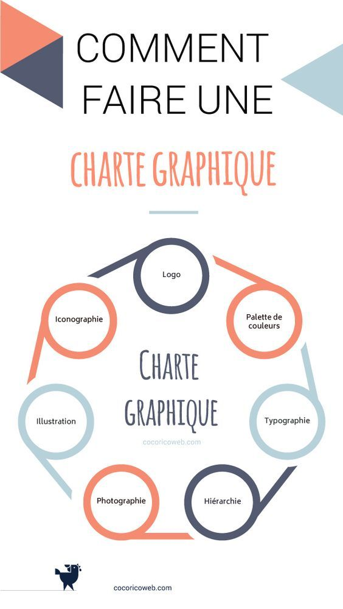

Ce qui me fait vibrer
Au-delà du code, voici les domaines qui me passionnent et nourrissent ma créativité.
Design & UI/UX
J'adore créer des interfaces qui sont non seulement belles, mais aussi intuitives. Pour moi, le design est une forme de résolution de problèmes visuels.

Nouvelles Technologies
L'évolution de l'IA et des frameworks modernes me fascine. Je passe beaucoup de temps à explorer comment ces outils peuvent simplifier la vie des utilisateurs.

Création Graphique
Le dessin et la composition graphique me permettent de m'évader. C'est là que je puise mes idées de couleurs et de structures pour mes projets web.